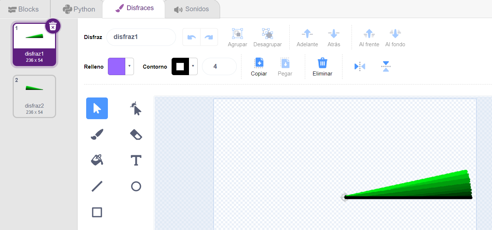
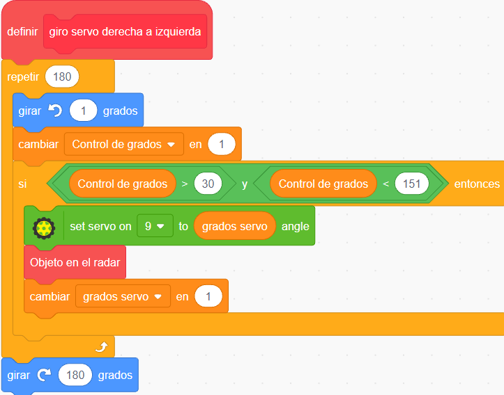
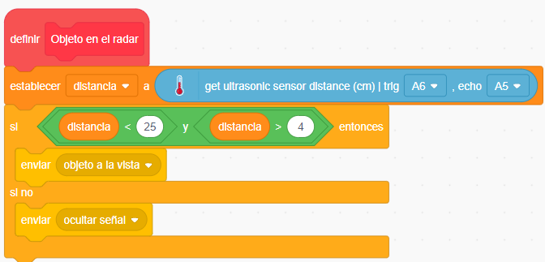

Descripción del programa
En este proyecto se incorporan nuevos recursos gráficos y bloques para intentar generar una simulación realista del funcionamiento de un radar. Radar 1.0 tiene 3 objetos o personajes y un Escenario con un fondo:
- sonda
- cobertura
- Goalie
- Un Escenario
Utiliza las flechas para navegar por el desarrollo del proyecto
1. Objeto sonda: disfraces
sonda está compuesto por dos disfraces, uno usado para el paneo de 0° a 180° y el otro para el paneo de 180° a 0°

1.a. Bloques de sonda: programa principal
|
El programa principal inicia indicando que el cable de señal de nuestro servo está conectado al pin 9 de Arduino Nano y se ubicará en un ángulo aproximado de 90°, es decir apuntando hacia el frente de PonchoBot. Luego, dentro del ciclo repetir tenemos organizadas las diferentes partes con nuevos bloques creados en la categoría Mis Bloques. |
1.b. Bloques de sonda: valores iniciales
|
Como su nombre lo indica, en condiciones iniciales establecemos la variable grados servo que indica los grados de partida (30) y la variable Control de grados que se utilizará para controlar la repetición de los ciclos repetir. El objeto se ubica en la posición 0, -180 es decir en el centro del borde inferior (abajo al medio): Se recurre al bloque apuntar en dirección 90 porque se cambiará de dirección en el giro durante el programa, y es necesario, cada vez que comience un nuevo ciclo, apuntar el objeto sonda (su primer disfraz) hacia su posición original. |
1.c. Bloques de sonda: giro del servo de derecha a izquierda
|  |
El bloque definir giro servo derecha izquierda hace que el disfraz1 de sonda gire 180° de derecha a izquierda (simulando el paneo del radar). A los 31° (es decir que el ciclo se repitió 30 veces anteriormente), la variable Control de grados "permite" ingresar dentro de la condición Control de grados > 30 . Alli comienza a girar el servo (evitando los ángulos menores a 30°) y llama a Objeto en el radar para comenzar a medir la distancia y presentar en pantalla al objeto que estaba oculto: Goalie(un personaje de la biblioteca de Pictoblox). Luego se incrementa el valor de los grados del servo en 1, para que en el próximo ciclo (del repetir180 ) el servo continúe con su giro. |
Armado de la condición lógica
Para armar la condición lógica del bloque si Control de grados > 30 y Control de grados < 151 se puede proceder de la siguiente manera:
1.d. Bloques de sonda: midiendo distancias
|
 Nota: hay que tener en cuenta que el sensor ultrasónico usado, nos entrega medidas aproximadas y su velocidad de actualización en el cambio de medidas no es inmediato. Su rango de medida se encuentra entre los 4 y los 40 cm aproximadamente. En nuestro caso lo limitamos por programa entre los 4 y 25 cm. |
Se almacena la distancia medida por el sensor ultrasónico (es una medida aproximada) en la variable distancia y si la condición de que sea menor a 25 cm se cumple, se ingresa al condicional y se ejecuta el bloque enviar objeto a la vista . Este bloque envía un mensaje y quien lo reciba va a poder seguir con la ejecución del programa. En este caso vamos a hacer que lo reciba el objeto Goalie para mostrarse en pantalla, en las coordenadas correspondientes. La programación de Goalie la veremos más adelante. |
1.e. Bloques de sonda: giro del servo de izquierda a derecha
Continuando con los bloques del objeto/personaje sonda, se presentan los bloques que gestionan el giro de izquierda a derecha, los cuales son casi iguales a los que gestionan el giro de derecha a izquierda visto anteriormente:
|
El bloque definir giro servo izquierda derecha hace que disfraz2 de sonda gire 180° de izquierda a derecha (simulando el paneo inverso del radar). La variable Control de grados ahora disminuye -1 (de 180 a 0) y a los 149° "permite" ingresar dentro de la condición Control de grados < 150 . Alli comienza a girar el servo (evitando los ángulos mayores a 150°) y llama a Objeto en el radar para comenzar a medir nuevamente la distancia y presentar en pantalla al objeto que estaba oculto Goalie (un personaje de la biblioteca de Pictoblox), cuando detecte un objeto. Luego se decrementa el valor de los grados del servo en -1, para que en el próximo ciclo (del repetir180 ) el servo continúe con su giro. Al finalizar el ciclo se vuelve a "desgirar "al objeto sonda y dejarlo en su posición original, con el bloque girar a la izquierda 180 grados. |
2. Goalie: bloques de programa
El objeto/personaje Goalie es el que se muestra cuando el sensor de ultrasonido detecta una distancia menor a 24 cm y mayor a 4 cm. El mismo es el que recibe el mensaje enviado por Objeto en el radar (Objeto a la vista).
Sus bloques son:
El bloque de la bandera verde, oculta a Goalie al dar inicio al programa (no se lo ve en el escenario/pantalla), le reduce el tamaño un 50% y lo ubica en el margen superior derecho (240,180).
El bloque de al recibir ocultar señal (el que recibe el mensaje) simplemente oculta a Goalie cuando el sensor ultrasónico no detecta objetos dentro del rango establecido (4-25 cm).
| Recordemos que el mensaje es enviado por el procedimiento Objeto en el radar , y la programación para recibirlo está en el objeto que lo recibe: Goalie. |
El bloque al recibir objeto a la vista (el que recibe el mensaje) muestra uno de los dos disfraces de Goalie(para simular un movimiento de saludo) y lo ubica en las coordenadas x,y que se forman a través del coseno y seno del ángulo de giro del servo.
Goalie: Cómo armar el bloque de coordenadas
Para armar el bloque de las coordenadas x,y se puede proceder de la siguiente manera:
3. cobertura: bloques de programa
El objeto/personaje cobertura simplemente muestra en pantalla los semicírculos ubicando a los mismos por encima de los demás objetos. Sus coordenadas deben coincidir con los 3 rayos que salen del centro del borde inferior, los cuales están dibujados como fondo del Escenario. Sus bloques son:
4. Escenario: fondo
Escenario, no tiene bloques de programa, solamente un fondo (un disfraz) de color negro sobre los cuales salen los rayos del radar.